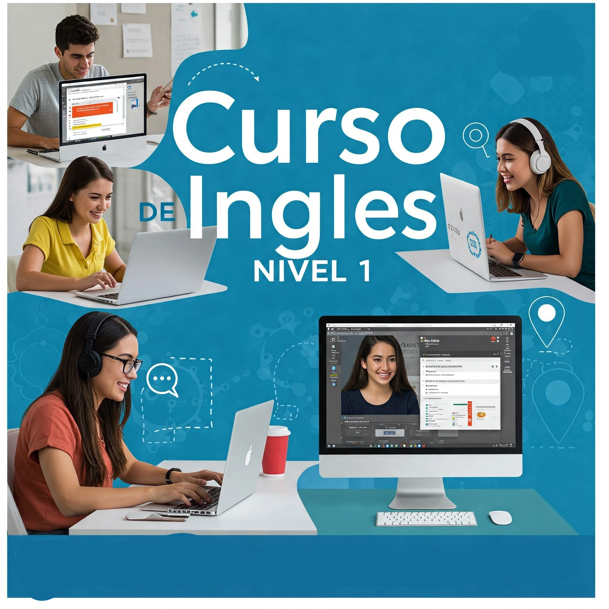

Curso de Inglés Básico Online (Nivel 1) - ¡Pronto Disponible en Iquique!
¡PRONTO!
Modalidad 100% Virtual (Online Asincrónico)
Descripción del Curso de Inglés Básico Online para Iquique
El curso de Inglés Básico (Nivel 1) de Anupro360 te ofrece 37 lecciones y 80 horas de trabajo online, diseñadas para que aprendas a tu propio ritmo desde Iquique o cualquier lugar. Durante un mes, tendrás acceso a material de video, material escrito y ejercicios prácticos. Nuestro tutor online estará disponible para resolver tus dudas vía email o mensajería dentro del aula virtual. Además, para practicar lectura y dicción, el aula virtual cuenta con salas de videoconferencias.
Al iniciar el curso, realizarás una prueba diagnóstica para identificar tu nivel de inglés y enfocarte en las áreas que necesiten mayor refuerzo. ¡Prepárate para comunicarte en inglés!
Modalidad de Ejecución del Curso Online
E-learning (Online Asincrónico) con autoaprendizaje basado en Videos y otros contenidos interactivos
Los alumnos inscritos desde Iquique y otras regiones accederán a nuestra completa aula virtual, donde encontrarán videos explicativos, material de estudio descargable y una evaluación final para medir su progreso.
El curso de Inglés Básico se compone de 37 lecciones, sumando un total de 80 horas de trabajo online flexible. Podrás estudiar a tu propio horario durante el mes de duración del curso, aprovechando los videos, el material escrito y los ejercicios prácticos. Un tutor estará a tu disposición para consultas por email o mensajería dentro del aula virtual. Para las prácticas de lectura y pronunciación, el aula virtual ofrece salas de videoconferencias interactivas.
Malla Curricular del Curso de Inglés Básico Nivel 1
1. CURSO DE INGLÉS ESTÁNDAR NIVEL BÁSICO
PRUEBA DIAGNÓSTICO DEL NIVEL DE INGLÉS
- UNIT 1.- The Alphabet, Greetings, Personal Pronouns, Verb to be, Article a/an
- UNIT 2.- Demostratives, Possesion, Possesive Pronouns, Plurals, Whose
- UNIT 3.- WH Questions, There is There are, Prepositions of Place, Date, Time, Can
- UNIT 4.- Present Continuos, Simple Present, Frecuency Adverbs, Prepositions In-On-At, Have-Have got
- UNIT 5.- WH Questions Simple Past, Giving Directions, My city, Wh Questions To be Past.
- UNIT 6.- Simple Past, WH Questions Simple Past, Continuous Past, WH Questions Continuos Past, Could, Object Pronouns
- UNIT 7.- Future will, Future going to, Future will & Future going to, Uncountable and Countable nouns, Object Pronouns
FINAL TEST BASIC LEVEL
REFERENCE INFORMATION
¿A Quiénes Se Dirige Este Curso Online?
Este curso online está dirigido a personas en Iquique y otras localidades interesadas en desarrollar habilidades básicas de comunicación en inglés para trabajar en áreas de atención al público, como agencias de viajes, aduanas, aeropuerto, y cualquier otro sector donde la interacción en inglés sea necesaria.
Curso Online Disponible Para
Persona o Empresa
Aprobación y Certificación Online
Los alumnos que alcancen una puntuación igual o superior al 55% en la evaluación final recibirán un certificado de aprobación en formato digital.
Inscríbete Ahora (Próximamente)